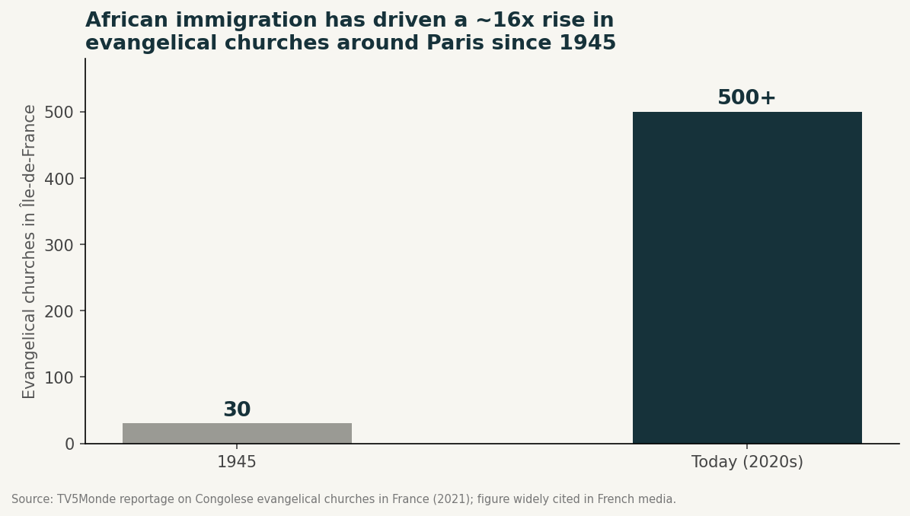
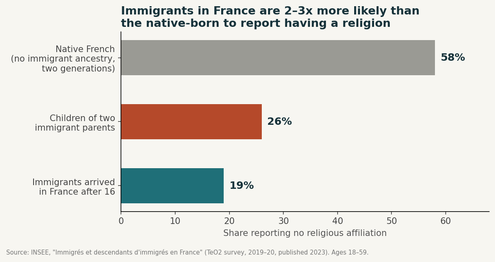

Faith in the diaspora, and the order in which it erodes
Why Africans abroad lose — or transform — their sense of religion, and what community replaces the church. Participation goes first, personal importance second, affiliation last. The first generation stayed in the pews; their children did not.
Executive summary
For most of the postwar history of African migration to Europe and North America, the church — and, for a large minority, the mosque — has functioned as the diaspora's default community infrastructure: the one institution that simultaneously offered spiritual meaning, mutual aid, childcare, language continuity, marriage markets, business networking, and a weekly reason to speak a home language and eat home food.
That default is now fraying on both ends. First-generation migrants remain disproportionately religious — in France, only 19% of immigrants who arrived after age 16 report no religion, against 58% of the native-born; in the United States, only about 6% of African immigrants are religiously unaffiliated. But their children are leaving pews at rates that mirror the broader secularization of Western societies, and even those who stay increasingly source the “belonging” part of church from other institutions — savings circles, WhatsApp groups, gyms, hometown associations, and professional networks — while treating faith itself as a private, portable, digitally mediated practice.
A large cross-national study published while this report was being compiled supplies the missing piece: erosion follows a fixed order. Public participation declines first, personal importance second, formal affiliation last — the Participation–Importance–Belonging sequence (Section 05). Because diaspora religiosity is almost always measured on affiliation, the most durable dimension, the headline statistics flatter it.
This report merges three bodies of evidence: why faith erodes among Africans abroad, what substitute communities are absorbing the church's social functions, and — new in this edition — diaspora testimony showing the sequence from the inside. All major statistics have been independently fact-checked against primary sources; results appear in Section 10.
Why the church became the diaspora's default community
More than a place of worship
Sociologists studying African migration to Europe describe migrant-founded churches as basic communities where, on the basis of faith, people learn to develop their own resources — institutions functioning less like a Sunday obligation and more like a parallel civic infrastructure. Research on the African Christian diaspora describes these congregations as sources of social, cultural, and spiritual capital: loci of identity, security, and international ministry networks connecting scattered communities across continents (Adogame, The African Christian Diaspora). Geographer David Ley's framing of “the immigrant church as an urban service hub” captures the same idea: for newly arrived populations, churches double as employment bureaux, translation services, and informal welfare offices long before anyone gets to the sermon.
This pattern shows up concretely in Paris. Reporting on Congolese, Ivorian, and other Francophone African evangelical churches in the Paris region describes prayer clubs, football tournaments, and choir rehearsals as deliberate solidarity mechanisms — activities that exist precisely because isolated migrants, some undocumented, need somewhere to be looked after and fed after the service (Le Parisien). The scale is striking: Île-de-France counted roughly 30 evangelical churches in 1945 and more than 500 today, growth overwhelmingly driven by African immigration (TV5Monde). One study of just two towns in the greater Paris suburbs, Melun and Le Mée, found 17 African churches for a population of only 60,000. A profile of one such church, Servir Jésus-Christ in Garges-lès-Gonesse, found that 70% of members are immigrants over 30 who describe the church as offering identitarian, linguistic, and cultural anchoring that French secular life does not.

A parallel story for Muslim West African migrants
The same dynamic plays out for the mosque among West African Muslim communities, particularly Senegalese, Malian, and Fulani migrants. Research on Fulani immigrants in New York describes the mosque as a social space of belonging in the constant re-articulation of identity — religious membership becomes especially important precisely when other cultural and social anchors feel fluid in a life defined by mobility (Fordham Research Commons). Scholarship on Senegalese Muslims in Europe and North America similarly finds that, unlike some other immigrant Muslim populations who severed ties to religious authority back home, West Africans have maintained strong transnational bonds to spiritual leadership in Senegal — a continuity shaping both their communal religious life and their relationship to the secular states they now inhabit (Cheikh Anta Babou).
The immigrant religiosity gap in France
The disparity in religiosity between immigrants and the native-born French population is well documented — and the original source is stronger than secondary reporting suggests. According to INSEE's Trajectoires et Origines 2 survey (2019–20, published March 2023), 58% of people with no immigrant ancestry across two generations describe themselves as having no religion, compared with only 19% of immigrants who arrived in France after age 16 and 26% of people with two immigrant parents. That gap — immigrant religiosity against a secularizing backdrop — is the engine behind the explosive growth of African-led churches in Paris, London, and New York even as historic denominations in those same cities shrink.

Within the immigrant population, African-origin migrants stand out as the most religious of all measured groups. In INSEE's earlier Trajectoires et Origines data, 78% of immigrants from Sahelian Africa and roughly two-thirds of those from Central Africa and the Maghreb reported strong religiosity, with only 6–14% reporting no religion — far above the immigrant average.

The generational unraveling
The numbers behind “losing church”
The most extensively documented version of this story comes from the United States. Pew Research's landmark 2021 survey of 8,600+ Black Americans found that Black Millennials (49%) and Gen Z (46%) are roughly twice as likely as the Black Silent Generation (26%) to say they seldom or never attend religious services — and among the minority of young Black adults who do attend, only about half go to a predominantly Black congregation, compared with roughly two-thirds of older generations.

The erosion is concentrated in the second and third generations, not in the immigrant generation itself — only about 6% of African immigrants in the US report no religious affiliation.
Gallup data shows U.S. church membership falling below 50% for the first time in eight decades of polling — 47% in 2020, down from around 70% through most of the twentieth century — with congregations increasingly describing themselves as aging institutions. The COVID-19 pandemic then accelerated the trend sharply for Black churches specifically: Pew found the share of Black Protestants attending services at least monthly fell from 61% in 2019 to 46% by late 2022 — a 15-point drop, the steepest of any major U.S. religious group — with 54% of Black Protestants now participating virtually, the highest share of any group.


The African-specific version of the same split
For African immigrant churches specifically — as distinct from the longer-established African American church — the generational fracture has its own texture, because the first generation is transplanting a homeland form of worship rather than inheriting a domestic tradition. Research on second-generation African Pentecostals in the United Kingdom finds children and grandchildren of migrants questioning the relevance of some of their parents' beliefs and practices, caught between the African cultural background their parents transported and the very different society in which the second generation is actually growing up. A doctoral study of Ghanaian diaspora churches in Sydney identified fifteen distinct drivers of youth disengagement — including outdated liturgy, weak youth leadership, and a lack of relational care from older congregants — concluding that diaspora churches need family-centered, intergenerational strategies simply to retain the children of their own founding members.
In Paris, the church that reported 70% immigrant membership over age 30 also reported that only 30% of its congregation consisted of young people actually born in France — a gap that, multiplied across hundreds of similar congregations, suggests the African evangelical boom in France is substantially a first-generation phenomenon whose durability across generations remains unproven. A study of Nigerian-heritage Christian identity found that 36% of respondents either did not consider themselves “African Christians” at all or were ambivalent about the label (Church Mission Society, Anvil).
Why faith erodes: five mechanisms
Merging the sociological literature with diaspora-specific research, five mechanisms recur across the U.S., UK, and French cases.
Spiritual, not religious — but not secular either
The data does not support a simple story of the diaspora becoming irreligious. Research on Black Caribbean and African American emerging adults finds growing numbers self-identifying as “spiritual but not religious” even as spirituality remains a significant cultural resource and source of resilience. Earlier survey work found 74% of African Americans and Caribbean Blacks describing themselves as both religious and spiritual, with only 19% identifying as spiritual-but-not-religious — a smaller share than the general U.S. trend, but real and growing. A 2026 special issue on migration and African youth spirituality argues that young African migrants leverage religion and digital platforms for identity, resistance and resilience in ways that unsettle the old religious-versus-secular binary (Journal of Ethnic and Migration Studies, 2026). Faith persists — but increasingly as something practiced quietly rather than displayed communally.
The order of erosion
Where the diaspora sits in the global secular transition — and why the sequence makes diaspora religiosity look considerably stronger on paper than it is in practice.
Everything above establishes that faith erodes in the diaspora and what replaces it when it does. A large cross-national study published while this report was being compiled supplies the piece the diaspora literature has been missing: the order in which the erosion happens. In “The three stages of religious decline around the world” (Nature Communications, August 2025), Jörg Stolz and Jean-Philippe Antonietti of the University of Lausanne, Nan Dirk de Graaf of Oxford, and Conrad Hackett of Pew Research Center tested the secular transition model against Pew surveys covering 111 countries, wave 7 of the World and European Values Surveys covering 58, and 17 countries tracked across four decades. Their finding is that secularization is not a uniform dimming but a fixed sequence.
The pattern holds across Christian, Muslim, Hindu and Buddhist contexts. Africa sits at the earliest stage of the transition worldwide — in Senegal, younger adults attend worship markedly less than their elders while identifying as Muslim and rating religion important at virtually identical rates.
Migration compresses an intergenerational process into a single life
The model's engine is generational rather than biographical: religiosity declines because parents continue to teach belief but stop backing it with visible religious behaviour — what evolutionary anthropologists call credibility-enhancing displays — so children inherit the words without the deeds. Migration is the exception that proves the mechanism. It changes nobody's theology; it changes their institutional environment overnight. The functional account of secularization the paper works from — biomedicine displacing religious healing, welfare states displacing spiritual reassurance — describes a substitution that a migrant undergoes in a single move rather than across six generations. The diaspora is not exempt from the secular transition; it is running it at speed.
Why participation goes first — and why it is rarely about belief
Applied to the diaspora, the first step of the sequence has an unglamorous explanation that has nothing to do with doubt. Shift work, long commutes, distance from a co-ethnic congregation and the plain absence of one's home denomination remove the weekly service long before anything removes the conviction. Migrants in this position characteristically insist their faith is intact and cannot account for why their attendance collapsed — and on this model they are describing their situation accurately. Step one is complete; steps two and three are on the clock. The pandemic data in Section 03 captures the same sequence unfolding in the receiving country rather than in transit: attendance fell fifteen points with no comparable collapse in affiliation.
The missing audience
Attendance is not only worship. It is a public, hard-to-fake signal, and in much of West and Central Africa it is socially enforced — absence from church or mosque is legible to neighbours and read as a statement about one's character. In Paris, London or Toronto that audience disappears, the signal loses its payoff, and the display quietly stops. Under the credibility-enhancing display mechanism, this is precisely the condition that causes the following generation to drop religiosity, which is why the fracture falls where it does: the migrant wavers, the migrant's child exits. The Garges-lès-Gonesse congregation reporting 70% immigrant members over 30 and only 30% young people born in France is that process caught mid-cycle.
Belonging survives the flight — which is why the statistics flatter
The most useful correction the model offers concerns measurement. Belonging is the last dimension to go, and it is anchored in family rather than geography, so it does not migrate. Emigration relocates the body while leaving kinship obligations fully intact, and affiliation is retained for exactly the reason the model predicts: it is cheap to keep and expensive to drop, because dropping it is visible to relatives at home in a way that skipping a service never is.
INSEE's 19% and Pew's 6% are belonging measures — the most persistent of the three dimensions, and therefore the one that lags furthest behind actual religious life. They establish that first-generation migrants have not shed religious identity. They do not establish that participation or personal salience are holding.
The counter-current, and the limits of the evidence
Two cautions belong alongside this. First, the conditions that dissolve religious obligation abroad also generate fresh demand for it: loneliness, racial exclusion and legal precarity drive migrants toward congregations, which is why African-led Pentecostalism expands in London and Houston even as attendance falls across the wider society. What shifts may be religion's function — from instrumental to consolatory and identity-preserving — rather than its volume. Second, the authors are themselves careful: traditionally Muslim countries display only the first two steps of the sequence so far, eastern post-communist countries do not fit the model at all, and forty years of survey data cannot conclusively verify a trajectory the study estimates at roughly 250 years. Migrants are additionally a selected population rather than a random draw on their countries of origin.
Summarized insight
- 01The unbundling documented in Section 07 is the institutional face of an individual-level sequence. Church functions detach in roughly the order believers shed them — the weekly gathering first, absorbed by gyms, run clubs and WhatsApp groups; personal salience next, displaced into private and digital practice; affiliation and family rites of passage persisting longest.
- 02Diaspora religiosity is routinely measured on its most durable dimension and therefore looks stronger than it is. Affiliation is a lagging indicator; attendance and personal importance are the leading ones, and they should be read first.
- 03Loss of participation is logistical before it is theological. Programmes pitched at belief are addressing the third stage of a problem that begins with scheduling, distance, shift work and the absence of a watching community.
- 04The generational fracture is predictable rather than anomalous. A first generation that professes without practising transmits words unsupported by deeds, and the second generation drops the words.
- 05The unclaimed function — cross-generational connection — is also the one that most directly slows the sequence, because it is the mechanism through which practice, not merely doctrine, is transmitted. That makes it both the clearest market gap and the highest-leverage intervention.
Field evidence: the sequence in migrants' own words
The secular transition model makes one prediction that is easy to overlook. As people abandon religious traits that were previously socially expected, they will generate legitimations for having done so — arguing that they can still be good believers after giving up attendance, that they still belong by tradition after ceasing to find religion important, and that they still hold good values after giving up belonging. The authors note explicitly that these rationalizations should be observable in qualitative material.
The material below is drawn from long-running discussion threads on r/Senegal, r/Kenya and the Nigerian forum Nairaland. It is illustrative rather than representative: contributors are self-selected, skew young and online, and disproportionately toward those who have already left. None of it should be read as measurement. Its value is that it shows the mechanism from the inside — arriving in the order the model predicts, with the reasoning attached.
Religion as instrument — and what happens when the instrument is no longer needed
The Nairaland thread asking why Nigerians become less religious after emigrating produces, unprompted, a lay version of the modernization thesis. One contributor sets it out in five steps: many Nigerians are religious largely for the material benefits they hope to obtain; in Nigeria those benefits — a job, a car, an exam pass, a marriage — are difficult to secure and are widely believed to be obstructed by hostile spiritual forces; abroad, the same benefits turn out to be obtainable through work and paperwork; and a religiosity that was instrumental all along loses its motivation. Another poster recounts a pastor who resolved a parishioner's recurring nightmares not through prayer but by asking whether he owned a fan, whether he had a television, and whether he ate properly before bed — then giving him money to furnish the room. This is precisely the substitution the model describes, narrated as autobiography rather than as social theory.
Attendance collapses first, and the believer cannot explain why
The clearest single case in the material is a contributor who attended church twice weekly plus a monthly Saturday service before moving to Canada in 2018. Writing afterwards, he describes his attendance falling away while explicitly maintaining that God comes first — and concedes that he does not know how it happened. He attributes it to exhaustion after a full working week, and predicts that anyone who is not a cleric will end up in the same position. Others in the thread offer purely logistical accounts: the home denomination has no branch nearby; the travel schedule does not permit it. Nobody in this group reports a crisis of belief. This is the first step of the sequence occurring in isolation, and it corroborates the model's most counter-intuitive implication — that the earliest and largest drop in religiosity is an infrastructure and scheduling event rather than a theological one.
The audience that stops watching
A Nigerian contributor identifies the enforcement mechanism directly: Africans are religious partly because failure to attend church or mosque marks a person, in the eyes of neighbours, as a witch or as evil — and this, she observes, does not operate in the destination countries. That is a precise vernacular statement of the credibility-enhancing display argument. Attendance is legible to others at home and illegible abroad, and once illegible it stops being worth its cost. The corollary is the one the model cares about: the children watching are the ones who will not inherit the practice.
Affiliation as family maintenance
The Senegalese thread is the clearest available illustration of belonging outlasting both practice and conviction. One contributor who left Islam three years earlier describes continuing to observe Ramadan and to perform belief for relatives, choosing family cohesion over disclosure. The thread's originator, who dates their own loss of belief to roughly two years earlier, continues to identify as Muslim because it is easier — and notes that since they do not drink, pray approximately and still fast, nothing is externally visible. A Senegalese-Canadian contributor reports praying performatively on every visit home. A fourth describes an acquaintance in Dakar who became simply too difficult to police, and whose family now tolerates open non-observance.
Every one of these is a person who has completed the first two steps of the sequence and is deliberately declining the third. The stated reason is consistently the same: affiliation is the dimension relatives can see, and it is anchored in a family that did not migrate. Migration relocates the body but not the kinship network, so the one dimension held in place by kinship is the one that does not move.
A mechanism the model does not specify — comparison
One driver recurs in the diaspora testimony that the secular transition model does not explicitly account for: exposure to competing explanations held by people with no stake in the outcome. A Nigerian contributor recalls attempting to demonstrate God's existence to white housemates by describing a visa granted after fasting, and being told it might simply be probability — then discovering that the passport in question required no visa for many destinations in the first place. A Kenyan contributor arrives independently at the observation that religion is geographical: people overwhelmingly hold whichever beliefs prevail where they happened to be born. Neither realisation is readily available inside a country that is 96% Muslim or 85% Christian, and neither is easy to avoid in a multi-faith city. Notably, a defender of Islam on the Senegalese thread advances the same causal claim as a criticism — that most Senegalese ex-Muslims have spent time in the West and absorbed liberal ideas there.
What this material cannot show
The threads supply their own strongest counter-argument. A Nigerian contributor objects that emigration substitutes one form of distress for another — loneliness, social exclusion and racial discrimination in place of material insecurity — and asks why, if the abroad thesis holds, America is so full of churches. His answer is that the need persists and only its content changes: at home the church is sought for material provision, in the West for comfort and emotional wellbeing. Another contributor, recently arrived in Canada, responds to the account of drifting attendance not by agreeing but by urging resistance to it — a reminder that the conditions which erode observance also produce deliberate recommitment. Those who have left are far more motivated to write about it than those who stayed, and none of these platforms would surface the membership of a thriving Pentecostal congregation in Dallas or a Mouride dahira in Harlem. These threads document the reasoning of people moving through the sequence; they cannot indicate how many are moving through it.
What fills the gap: a map of replacement communities
As congregational participation loosens — especially among the diaspora-born generation — several distinct institutions are absorbing the functions the church used to bundle together: belonging, mutual aid, cultural continuity, ritual, and identity maintenance. None replicates all of them at once, which is itself a significant finding.

Financial trust circles: chamas, susus, and esusu groups
Rotating savings and credit associations are arguably the diaspora institution that has most successfully digitized without losing its social glue. Kenyan chamas, Nigerian esusu groups, and Caribbean/Haitian sou-sous share the same architecture: regular contributions, rotating payouts, and a governance culture built on trust and mutual accountability that closely mirrors what church cell groups used to provide. Kenyan chamas alone are estimated at more than 300,000 registered groups holding roughly KES 300 billion (about US$3–3.4 billion) in combined assets, and diaspora chamas increasingly manage everything from real-estate purchases to emergency welfare funds for members abroad, with WhatsApp handling day-to-day coordination. What these groups replicate from church is mutual financial obligation and rotating leadership; what they do not replicate is shared cosmology, moral instruction, or rites of passage. Chamas manage money and welfare, not meaning.
Hometown associations and ethnic unions
Hometown associations — voluntary organizations formed by immigrants from the same city or region of origin — perform a more explicitly civic version of what churches do, and the two institutions are often intertwined rather than competing: HTAs frequently raise money for religious celebrations or church repairs in both the destination country and back home. Research on Haitian HTAs after the 2010 earthquake found these associations became critical trust-based infrastructure for post-disaster reconstruction, precisely because they combined the shared-identity trust of a diaspora congregation with the practical focus of a development organization.
The WhatsApp group and the digitally mediated diaspora
Digital platforms have become the connective tissue running underneath almost every other institution on this list — chamas coordinate on WhatsApp, hometown associations organize fundraisers over group chats, and churches themselves livestream services for members who have drifted from weekly attendance. Recent research identifies digitally mediated publics as a resource young African migrants use for identity and resilience independent of formal religious institutions, and describes how digital religious practices foster sustained connections to African heritage even when in-person congregational ties weaken. In effect, the WhatsApp group has become the diaspora's new parish register — smaller, more porous, easier to leave, but also easier to join, and infinitely more granular than a single congregation could ever be.
The gym as the new congregation
Perhaps the most striking substitution documented in the secularization literature — one that maps directly onto diaspora professionals in cities like Paris and London — is the rise of fitness communities as de facto churches. Harvard Divinity School researcher Casper ter Kuile's “How We Gather” project found that Millennials, despite declining religious affiliation, were flocking to communities that replicate almost every structural feature of a congregation: a fixed schedule, a charismatic instructor-leader, ritualized shared suffering, and a vocabulary of belonging rather than mere attendance.
Churchgoers say “I go to my church.” Gym members say “I belong to my gym.”
For diaspora professionals in European capitals, fitness studios, run clubs, and boxing gyms increasingly do the work a Sunday service did for an earlier generation of migrants: a recurring, in-person, ritualized reason to see the same faces every week.
Professional and cultural networks
For an upwardly mobile diaspora, LinkedIn communities, alumni networks, and diaspora-specific professional associations increasingly perform the identity-affirmation and networking functions churches historically monopolized for new migrants — introducing people to collaborators, mentors, and even life partners within a shared cultural frame, but organized around career and cultural affinity rather than doctrine. This is the cultural-affinity end of the spectrum that also produces diaspora social clubs, content communities, and explicitly non-religious frameworks of belonging built around shared historical memory and mutual responsibility rather than shared creed.

What gets lost when church is not replaced
The substitute institutions above are each good at one or two of the functions church historically bundled — belonging (gym, WhatsApp group), mutual aid (chama, hometown association), cultural affirmation (professional network) — but none combines them with intergenerational continuity and moral or existential meaning-making. This matters most acutely for two vulnerable groups: newly arrived migrants and older diaspora members.
For new arrivals, faith communities remain one of the most consistently documented buffers against loneliness and social isolation. A UK evidence synthesis on reducing loneliness among migrant and ethnic minority populations found that community members repeatedly identified faith as a protective resource, even though almost no formal UK interventions were designed around it. In moments of acute precarity — immigration enforcement crackdowns, for instance — the church remains the one institution migrants trust enough to physically show up to when everything else feels unsafe. For older immigrants, research on faith communities and loneliness among those aged 65 and over finds faith groups play an outsized, understudied role in preventing isolation in later life, because they are one of the few institutions that ask nothing of an elderly newcomer except presence.
Neither the gym, the WhatsApp group, nor the professional network is designed to serve a 68-year-old grandmother recently arrived to help with childcare. The church, historically, was.
This generational split is the sharpest fault line in the whole picture: the institution that best serves the first generation is precisely the one the second generation is walking away from, while the institutions the second generation is building instead are largely inaccessible to, or uninteresting for, their parents. The result is not so much loss of community in the aggregate as a bifurcation of community by generation.
The broader pattern behind the diaspora-specific one
This bifurcation is not unique to African or diaspora communities; it is a diaspora-accelerated version of a decline political scientist Robert Putnam documented across American civic life. Bowling Alone tracked a sustained collapse in church attendance, club memberships, and voluntary associations of every kind, and in recent interviews Putnam has argued the trend has only accelerated. Urban sociologist Ray Oldenburg's concept of the “third place” — a gathering space that is neither home nor work — names what is being lost: churches, alongside cafés, barbershops, and civic halls, were third places almost by design, and their decline is driving a documented craving for substitutes, particularly among Gen Z.
What makes the diaspora case distinct is timing and intensity rather than direction. Diaspora churches are, in effect, running the entire Putnam decline curve inside a single generation gap: the first-generation congregation was often founded from scratch in the 1980s–2000s specifically to fill a social-capital vacuum, and the second generation is now walking away from it at the same pace or faster than the native-born walked away from mainline churches over the preceding fifty years.
Implications and conclusion
The evidence points to a specific, actionable gap rather than an unsolvable problem. The institutions currently absorbing belonging for the diaspora-born generation are structurally good at recurring, low-friction, identity-affirming contact but structurally weak at the two things churches did almost accidentally: cross-generational mixing, and collective meaning-making around birth, marriage, hardship, and death. A community platform aiming to serve the diaspora at scale is therefore less likely to succeed by replicating a congregation wholesale, and more likely to succeed by deliberately stitching together the fragmented functions that already work individually — the ritual cadence of a fitness or content community, the financial trust architecture of a chama, the mutual-aid instinct of a hometown association — while explicitly designing for intergenerational participation. The Ghanaian diaspora youth research is instructive: the failure identified was not disinterest in community, but outdated liturgy, weak leadership, and lack of relational care — a design problem as much as a spiritual one.
The diaspora church built its centrality on bundling distinct goods — spiritual meaning, mutual aid, cultural continuity, and cross-generational belonging — into a single weekly institution, at a moment when migrants had almost nowhere else to get any of them. That bundle is now unbundling, generation by generation, and in a predictable order.
What replaces church for the diaspora-born generation is not a single institution but a portfolio: financial trust circles for mutual aid, digital networks and hometown associations for cultural continuity, fitness communities and professional networks for recurring belonging, and an increasingly private, hybrid, spiritual-but-not-necessarily-religious practice for meaning-making. The underlying erosion is neither a personal failing nor a simple triumph of secularism, but the predictable outcome of maintaining communal, culturally embedded religious traditions inside individualistic, secular societies — filtered through language loss, hybrid identity, and economic pressure.
The one thing the replacement portfolio has not solved — and the clearest opportunity for anyone building diaspora infrastructure today — is cross-generational connection: the function churches performed almost as a byproduct of putting grandparents and grandchildren in the same room every Sunday.
The fact-check
Every load-bearing statistic in the merged source material was checked against primary or independent sources in July 2026.
| Claim | Verdict | Notes |
|---|---|---|
| Black Millennials 49% / Gen Z 46% / Silent Gen 26% seldom or never attend services | VERIFIED | Matches Pew Research Center, “Faith Among Black Americans,” Feb 2021, verbatim. |
| Young Black attendees: ~half attend predominantly Black congregations vs ~two-thirds of older generations | VERIFIED | Pew 2021: 53% of Gen Z / Millennial Black worshipers vs 66% of Boomer-and-older. |
| African immigrants in the U.S.: only ~6% religiously unaffiliated | CONSISTENT | Consistent with Pew's Black American surveys; the 6% figure appears in Pew analyses of foreign-born Black adults. |
| Black Protestant monthly attendance fell 61% (2019) to 46%, steepest of any major group; over half attend virtually | VERIFIED | Pew, March 2023. The 46% comes from the November 2022 wave; a 15-point decline. 54% virtual attendance confirmed. |
| France: 58% no religion (no immigrant ancestry) vs 19% (arrived after 16) vs 26% (two immigrant parents) | VERIFIED | Exact figures from INSEE, Trajectoires et Origines 2 (2019–20), published March 2023 — not the secondary outlet cited in the draft. |
| Secularization follows a fixed Participation–Importance–Belonging sequence; Senegal shows an attendance gap only | VERIFIED | Stolz, de Graaf, Hackett & Antonietti, “The three stages of religious decline around the world,” Nature Communications 16:7202 (19 Aug 2025). Note the authors' caveats: Muslim-majority countries evidence only the first two steps, and 40 years of data are extrapolated to a ~250-year transition. |
| Diaspora forum testimony cited in Section 06 (r/Senegal, r/Kenya, Nairaland) | ILLUSTRATIVE | Public posts, quoted in paraphrase. Contributors are self-selected and skew toward those who have already disaffiliated; used to evidence mechanism, never prevalence. No quantitative claim rests on it. |
| Île-de-France: ~30 evangelical churches in 1945, 500+ today | PLAUSIBLE | TV5Monde reportage (2021), repeated in French media; a media estimate rather than an official census. |
| Melun + Le Mée: 17 African churches per 60,000 residents; extrapolation to ~1,700 in greater Paris | PARTLY SUPPORTED | The local count is reported by Regards protestants; the 1,700 extrapolation is illustrative, not measured. |
| Kenyan chamas: 300,000+ registered groups, ~KES 300 billion in assets | VERIFIED | Confirmed across multiple independent sources; USD equivalent ~$3–3.4bn. A further ~900,000 unregistered chamas are estimated to exist. |
| U.S. church membership below 50% for the first time (Gallup) | VERIFIED | Gallup 2021: 47% in 2020, the first sub-majority reading in 80+ years of polling. |
| Putnam: League of Women Voters / Elks / Moose membership fell by half between 1930 and 1935 | NEEDS CONTEXT | Describes the Depression-era dip Putnam cites as background (membership later rebounded), not his central post-1960s decline. Corrected in Section 08. |
| 36% of Nigerian-heritage respondents reject or are ambivalent about the “African Christian” label | CONSISTENT | Matches the Church Mission Society Anvil study of Nigerian millennial Christians (Ola, 2022). |
| 74% of African Americans / Caribbean Blacks both religious and spiritual; 19% spiritual-but-not-religious | CONSISTENT | Matches published survey work (Taylor et al., PMC 2008) as cited. |
VERIFIED = matched against primary source. CONSISTENT = matches the cited study as described; primary microdata not re-run. PLAUSIBLE / PARTLY SUPPORTED = media estimate or extrapolation, flagged as such. NEEDS CONTEXT = accurate number, misleading framing in the original draft, now corrected. ILLUSTRATIVE = qualitative material, mechanism only.
Selected references
- Pew Research Center (2021). Faith Among Black Americans. Survey of 8,660 Black U.S. adults.
- Pew Research Center (2023). How the Pandemic Has Affected Attendance at U.S. Religious Services.
- INSEE (2023). La diversité religieuse en France (Drouhot, Simon, Tiberj; Trajectoires et Origines 2).
- Gallup (2021). U.S. Church Membership Falls Below Majority for First Time.
- Stolz, J., de Graaf, N.D., Hackett, C. & Antonietti, J.-P. (2025). The Three Stages of Religious Decline Around the World. Nature Communications 16:7202.
- Voas, D. (2009). The Rise and Fall of Fuzzy Fidelity in Europe. European Sociological Review 25.
- Henrich, J. (2009). The Evolution of Costly Displays, Cooperation and Religion. Evolution and Human Behavior 30.
- Adogame, A. (2013). The African Christian Diaspora. Bloomsbury.
- Ley, D. (2008). The Immigrant Church as an Urban Service Hub. Urban Studies.
- Ola, J. (2022). African Millennial Christians in the Diaspora and the Identity Question. Anvil 37(3), Church Mission Society.
- Counted, V. (2019). African Christian Diaspora Religion and/or Spirituality. Culture and Religion.
- Chacko, E. (2019). Fitting In and Standing Out. African and Black Diaspora 12(2).
- Nyanni, C. (2020). Changing Lanes: Second-generation African Pentecostals in the UK.
- Kwiyani, H. (2025). We Fear For Our Children: Africans Wrestling with Secularism in Europe.
- Journal of Ethnic and Migration Studies (2026). Special issue: migration, African youth, religion and digital platforms.
- Transculturation of the Spirit: The Re-Enchantment of Secular Europe Among 2G African Christians (2026). Culture 2(2).
- ter Kuile, C. & Thurston, A. (2015). How We Gather. Harvard Divinity School.
- Putnam, R. (2000). Bowling Alone. Simon & Schuster.
- Oldenburg, R. (1989). The Great Good Place. Paragon House.
- TV5Monde (2021); Le Parisien; Regards protestants; ParisGo (2023) — reporting on African evangelical churches in the Paris region.
- Babou, C.A. — scholarship on Senegalese Muslim transnationalism (Wissenschaftskolleg zu Berlin).
- Taylor, R.J. et al. (2008); PMC (2024) — religiousness and spirituality among African Americans and Black Caribbeans.
The diaspora helps the diaspora.
Africa Global Forum is a peer network for Africans abroad — help each other, sit together, and bounce ideas. This research is part of an open library. The Forum itself is by application.